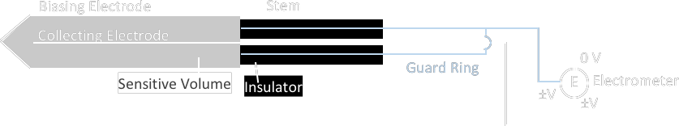
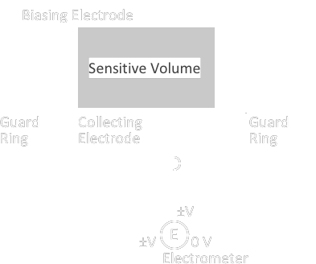
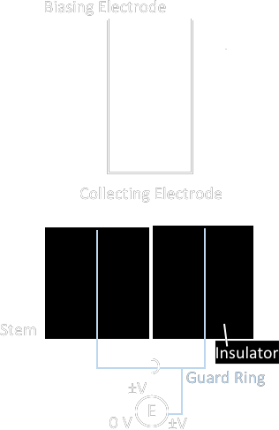
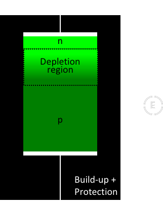
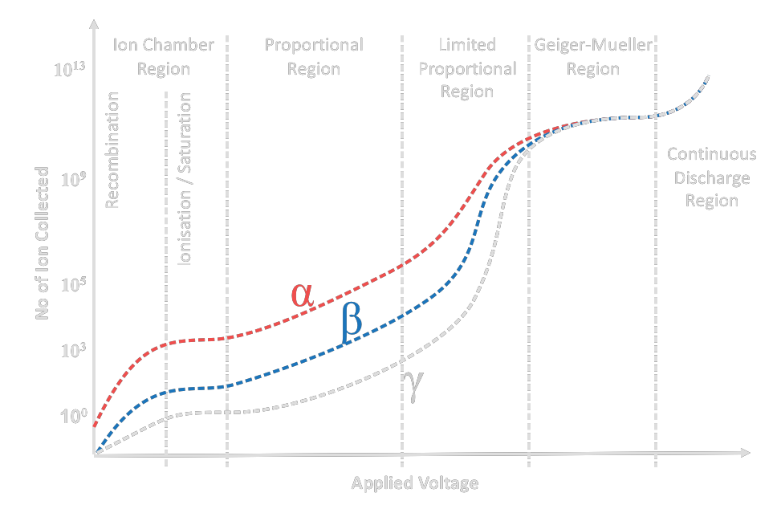

| Cavity Ionisation Chamber |
   |
| Free Air Ionisation Chamber |
← Primary standard for photon < 300 keV
|
| Silicon Diode |
Basic  p-type doped silicon = e receptor (holes) n-type doped silicon = e donor * noted the coaxial output (unlike guarded ion chambers which need triaxial cable)
Not Recommended for PDD Measurement ← energy spectra vary along depth ← diodes tend to over-respond to low dose
∴ embedded with backscatter shield to lower the response to low dose backscatter
|
| Model |
|
|||||||||||||
| Dosimetry |
(TG-191) \[ \large D_w = M_{corr} ~ N_{D,w} ~ k_L ~ k_F ~ k_Q ~ k_\theta \]
\(\large M_{corr}\) = reading corrected for background
i.e. \( M_{corr} = ( M_{raw} - M_{bkg} ) ~k_{s,i} ~k_d \)
\( k_d \) = depletion correction (for OSLD only)
\( k_{s,i} \) = individual sensitivity correction \(\large N_{D,w}\) = dose to water calibration factor
← cross calibrated with a calibrated ion chamber
← system specific, including:
reader
← account for day-to-day fluctuation and long term shift irradiation condition/geometry dose level readout delay time after irradiation ← determine for each reading session
if session specific calibration is not used → ~ 1.2 % uncertainty from day-to-day variation would be expected
\(\large k_L\) = dose linearity correction
TLD-100 response = linear < 2 Gy
= supralinear @ high dose
= flat @ very high dose \(\large k_F\) = fading correction
first few days → a few precent
every month → ~ 1% \(\large k_Q\) = beam quality correction
(1) intrinsic energy dependence
→ energy spectrum changes → signal-to-dose relationship changes (2) medium dependent energy dependence For TLD-100, compare to response @ 6 MV,
\(\large k_\theta\) = angular correction Post Tx Irradiate Reference TLD |
| Energy Dependence |
|
| Ion Chamber |
Dose Determination
Dose to air
\[ D_{air} = {\large \frac{Q}{m_{air}} \left( \frac{W_{air}}{e} \right) } \]
\(\large \left( \frac{W_{air}}{e} \right) \) = mean energy to produce an ion pair in air
depends on humidity
Dose to Air → Dose to Medium
Bragg-Gray cavity theory
+ Spencer-Attix cavity theory Gas Amplification Curve

\[ Collection~Efficiency = \large \frac{Q(V)}{Q_{sat}} \]
where
\(Q(V)\) = the charge collected at given \(V\)
\(Q_{sat}\) = the saturation charge |
|
Ionisation Chamber
|
|
|
| Proportional Counter | ||
GM Counter
|
||
| Other Materials | Diamond | Thimble ~ 0.002 cc |
| Scintillator | ||
| Luminescence | TLD |
Material
|
| OSL | ||
| Neutron Detector |
He-3 Li-6 Br-10 U-235 |
3He + n → 1H + 3H 6Li + n → 4He + 3H 10Br + n → 2 4He + 3H U fission |
| Well Chamber | Air Chamber |
Well chamber certificate comes with a calibration factor @ 1 m e.g. 9.397 × 10 5 \( \large \frac{Gy}{A~h} \) When a source is placed in a well chamber, a charge of 49.90 \(nA\) was measured, the dose rate of the source at 1 m should be \[ ( 49.90 \times 10^{-9} )(9.397 \times 10^5 ) = 0.0469 \frac{Gy}{h} = 46.9 \frac{mGy}{h} \] From the source certificate we found the conversion of 0.110 \( \large \frac{mGy~m^2}{h~GBq} \), therefore, \[ \frac{46.9}{0.110} = 426.4 GBq = 11.52 Ci \] |
| MDA |
= Minimum Detactable Activity ISO 11929
|
|||||||||||
| Acceptance |
|